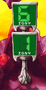

| 概要 | 情報 | アイテム一覧 |
| 敵キャラ一覧 | ステージ一覧 | 夢幻迷宮について |
| 攻略チャート | Zwei!! 攻略へ |
| ステージ選択へ |
ケノーピ火山 Lv.8
| A | A地点の敵を全て倒すと、A'、A''の扉が開きます。 |
| B | BからB'地点までは罠が点在しています。注意しましょう。 |
| C | C地点へ移動すると、突然敵が現れ板挟みになります。 不要なダメージを受けぬように注意しましょう。 |
D |
D地点の二つのボタンスイッチをONにすると扉が開きます。 それと同時にトゲが動き出すので注意してください。 |
| E |
E地点のボタンスイッチの押し方のヒントです。 |
| F | F地点では敵が突然現れます。 また、罠が点在しており不用意に行動するとかなりの痛手を食らいます。 |
| G  |
ZONYセンサーです。 このセンサーは同マップにあるタルが壊されるとカウントがあがります。 合計6個タルを壊したら一度訪れてみましょう。 |
| ステージ選択へ |
| 概要 | 情報 | アイテム一覧 |
| 敵キャラ一覧 | ステージ一覧 | 夢幻迷宮について |
| 攻略チャート | Zwei!! 攻略へ |
Zwei!!
| 目次へ戻る | ページの上部へ |